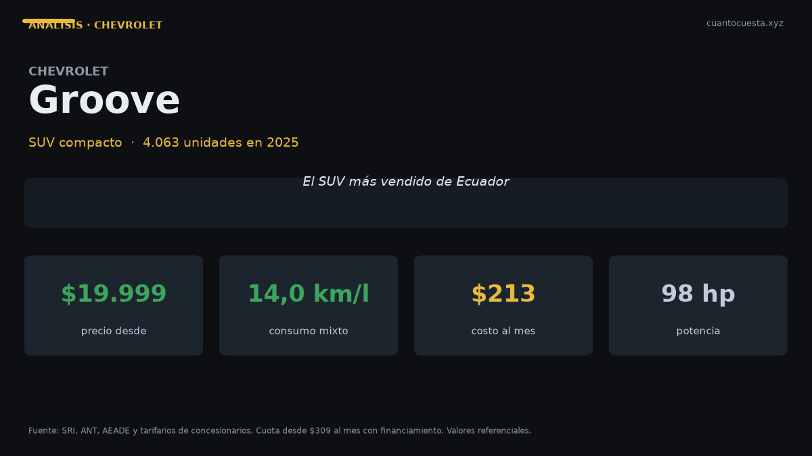

Chevrolet Groove en Ecuador: análisis completo, costos y veredicto
El SUV más vendido de Ecuador: 4.063 unidades en 2025. Precio desde $19.999, cuota de $309 al mes, costo anual real y veredicto frente al Kia Sonet.

El Chevrolet Groove es el SUV más vendido de Ecuador: 4.063 unidades en 2025. Se vende entre $19.999 (LTZ) y $24.490 (Premier MT) y la cuota arranca en $309 al mes. Es la puerta de entrada al SUV compacto nuevo sin salir de las marcas de volumen.
Ese precio explica el volumen. En un 2025 que cerró con 124.505 vehículos nuevos (+15% vs 2024) y un primer semestre de 2026 con 78.185 unidades (+41,4%, récord histórico), el Groove encontró el hueco exacto: un SUV por menos de $20.000 con respaldo de red nacional.
El Groove vende más que cualquier otro SUV del país. Eso no lo hace el mejor de su categoría en todo: con 4 airbags queda por debajo de rivales con 6. Lo hace el más fácil de comprar, mover y reparar en Ecuador.
Ficha técnica
| Dato | Chevrolet Groove |
|---|---|
| Segmento | SUV compacto |
| Motor | 1.5 L DVCP |
| Potencia | 98 hp |
| Torque | 143 Nm |
| Transmisión | Manual 6 velocidades |
| Largo | 4.220 mm |
| Consumo homologado | No publicado oficialmente |
| Maletero | No especificado en la ficha consultada |
| Combustible | Extra o Ecopaís a $3,26 el galón |
| Garantía | 7 años o 150.000 km |
El motor de 1.5 L entrega 98 hp y 143 Nm, con caja manual de 6 velocidades. La ficha no publica consumo homologado: con ese motor y peso de SUV compacto, el rango esperable es de 12 a 14 km/l mixto. Verifícalo en tu prueba de manejo.
Precio y versiones en Ecuador
| Versión | Precio de referencia |
|---|---|
| LTZ | $19.999 |
| Premier MT | $24.490 |
| Cuota desde | $309 al mes |
Hay $4.491 de diferencia entre la versión de entrada y la tope. Los precios varían por agencia, ciudad y promoción del mes, y la cuota depende del plan de financiamiento y del porcentaje de entrada.
Cuánto cuesta mantenerlo
Escenario: 12.000 km al año, versión Premier MT de $24.490, combustible Extra o Ecopaís a $3,26 el galón. Como el consumo no está publicado, usamos 13 km/l mixto como estimación declarada.
| Rubro anual | Rango estimado |
|---|---|
| Combustible (estimación 13 km/l) | ~$795 |
| Mantenimiento (aceite, filtros, alineación) | $400 – $600 |
| Matrícula y revisión técnica | ~$180 |
| Seguro (≈4% del valor) | $980 |
| Llantas (amortizadas a 40.000 km) | ~$150 |
| Otros (lavado, imprevistos) | $100 – $200 |
| Total anual | $2.605 – $2.905 |
| Equivalente mensual | $217 – $242 |
Si tu referencia general es el auto a gasolina promedio (12.000 km al año: $1.480 a $1.900 anuales), el Groove queda por encima por dos razones: el seguro de un vehículo de $24.490 y el consumo de un SUV con motor 1.5 L atmosférico.
Un contraste útil: el tarifario oficial de un concesionario Ford fija el costo de mantenimiento en $0,048 por kilómetro. A 12.000 km, eso son $576 al año en servicios de taller, cifra que encaja dentro del rango $400–$600 que usamos arriba.
Precios unitarios para comparar con tu taller: aceite y filtro $50–$90 cada 5.000 km, alineación y balanceo $30–$50, filtro de aire $20–$40, filtro de combustible $30–$60, líquido de frenos $40–$70, bujías $50–$100, pastillas delanteras $80–$150, amortiguadores $200–$350.
Equipamiento y seguridad
| Elemento | Chevrolet Groove |
|---|---|
| Airbags | 4 |
| ABS + EBD | Sí |
| Control electrónico de estabilidad | Sí |
| Asistente de arranque en pendiente | Sí |
| Pantalla táctil | 8" |
| Asientos | Reclinables abatibles 60/40 |
| Detalles en ecocuero | Sí |
El punto a mirar con lupa son los 4 airbags. Varios rivales de precio similar en Ecuador ofrecen 6 de serie. Si el auto lleva familia a bordo todos los días, esto debería pesar en la decisión.
Lo demás está bien resuelto para el precio: los asientos abatibles 60/40 dan modularidad real para carga, hay pantalla de 8", y el control de estabilidad más el asistente de arranque en pendiente cubren lo esencial para Quito, Cuenca o Loja, donde vives en pendiente.
Para quién es y para quién no
Es para ti si:
- Quieres un SUV nuevo por menos de $20.000
- Manejas caminos de lastre, baches o entradas rurales con frecuencia
- Necesitas red de servicio en ciudades intermedias, no solo en Quito y Guayaquil
- Tu cuota máxima arranca en $309 al mes
- El despeje del suelo importa más que el consumo
No es para ti si:
- El 90% de tu recorrido es asfalto: un sedán te cuesta $5.000–$7.000 menos
- Buscas 6 airbags en todas las versiones
- Quieres caja automática: la ficha consultada describe transmisión manual de 6 velocidades
- Tu prioridad es el consumo más bajo de la categoría
Comparación con su rival directo
| Modelo | Precio desde | Motor | Airbags | Nota |
|---|---|---|---|---|
| Chevrolet Groove | $19.999 | 1.5 L, 98 hp | 4 | SUV más vendido del país |
| Kia Sonet | $21.599 | 1.5 L, 113 hp | 6 de serie | Ensamblado en Quito por Aymesa |
| Kia Soluto (alternativa sedán) | $15.799 | 1.4 L, 94 hp | 6 en EX | Maletero de 475 L |
El Sonet cuesta $1.600 más que el Groove de entrada y entrega 15 hp más, 6 airbags de serie, caja IVT disponible y garantía de 10 años o 160.000 km. Además se ensambla en Ecuador, lo que acorta tiempos de repuestos.
El Groove responde con precio, un largo de 4.220 mm y una red de posventa que llega a más ciudades del país. No es el rival más barato por casualidad: es el más vendido porque es el más fácil de conseguir y de mantener fuera de las dos grandes ciudades.
Veredicto
El Chevrolet Groove es el SUV nuevo más accesible que rinde de verdad, y el más vendido del Ecuador. Por $19.999 tienes carrocería alta, asientos modulares, control de estabilidad y respaldo de marca en todo el país.
Dos cosas debes saber antes de firmar: su consumo no está publicado y sus 4 airbags quedan por debajo del estándar de rivales que cuestan $1.600 más. Si el uso es mixto entre ciudad y camino malo, con familia, y el presupuesto manda: el Groove es la decisión correcta. Si haces 90% asfalto, un sedán te ahorra miles de dólares.
Precios referenciales de lista a septiembre de 2026. El consumo del Groove no está publicado oficialmente en las fuentes consultadas; la cifra de combustible es una estimación declarada. Varían precios por agencia y promoción. No constituye asesoría financiera.
Sigue leyendo
Chery Arrizo en Ecuador: análisis completo, costos y veredicto
Vendió 1.534 unidades en 2025 y Chery creció 50,1% en el primer semestre de 2026. Precio, repue
Chevrolet D-Max en Ecuador: análisis completo, costos y veredicto
Es la camioneta más vendida de Ecuador con 5.515 unidades en 2025. Precio, costo real de operac
GWM Poer en Ecuador: análisis completo, costos y veredicto
La camioneta ensamblada en Ambato que rompió el precio del 4x4: 4.092 unidades en 2025. Precio,
Hyundai Grand i10 en Ecuador: análisis completo, costos y veredicto
Segundo auto de pasajeros más vendido de Ecuador con 1.690 unidades en 2025. Precio desde $13.9
Hyundai Tucson en Ecuador: análisis completo, costos y veredicto
Vendió 2.395 unidades en 2025 y arranca en $32.499. Motor 2.5 L, 6 airbags y garantía de 5 años
Cómo usamos estos datos
Las cifras de esta guía provienen de fuentes públicas oficiales y tarifarios de concesionarios publicados. Los valores son referenciales: tasas municipales, promociones y precios de repuestos varían. Verifica siempre en la entidad o concesionario antes de decidir.